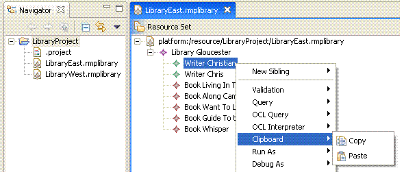

This example describes the usage of the clipboard framework within the SDK. It demonstrates how to copy and paste library model elements to and from the system clipboard respectively.
Please refer to the document Model Services Layer Examples Overview for reviewing the library meta-model used as the basis for demonstrating the capabilities in this example.
This example plug-in is named org.eclipse.gmf.examples.runtime.emf.clipboard.
This plug-in contributes the Clipboard menu to the library
editor's main menu and context menu. The menu has two actions:
ChangeRecorder APIPlease refer to the tutorial Clipboard Tutorial for reviewing the code samples within this example
Refer to this example if you need: